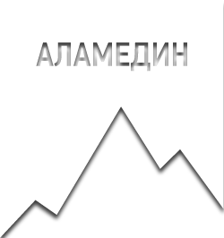
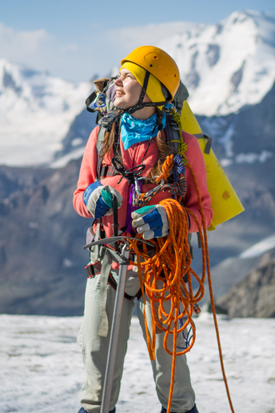

МАРШРУТ
КАРТА
ПЕРЕВАЛЫ
ЛЕДНИКИ
РЕКИ
ПОДГОТОВКА
ГЕОГРАФИЯ
СНАРЯЖЕНИЕ
МЕДИЦИНА
ПИТАНИЕ
ФОТОТЕХНИКА
СВЯЗЬ
ДНЕВНИК
ФОТОАЛЬБОМ
УЧАСТНИКИ
◀
1
2
3
4
5
6
7
8
9
10
11
12
13
14
15
16
17
18
19
20
21
22
23
►
Радостно

Маршрут
Карта
Перевалы
Ледники
Реки
Подготовка
География
Снаряжение
Медицина
Питание
Фототехника
Связь
Дневник
Фотоальбом
Участники